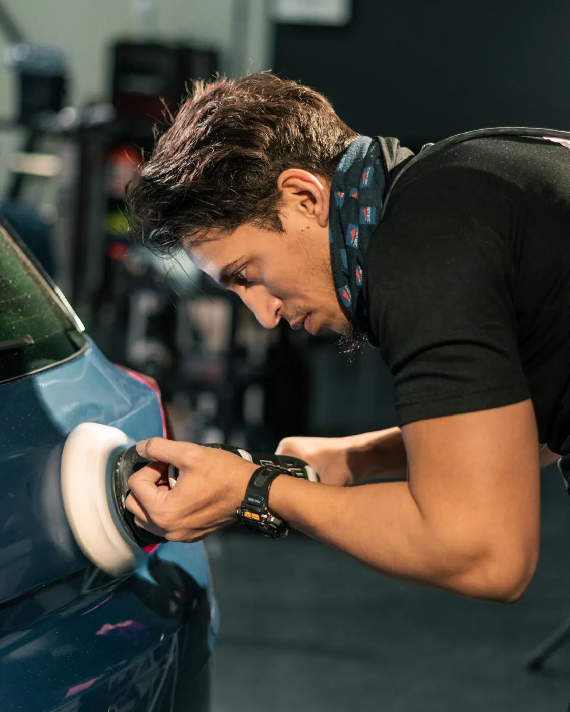

Notre histoire
Tout a commencé à 15 ans.
En 2023, Jean-Thomas Gagnon lance sa première entreprise de lavage. Le bouche-à-oreille fait le reste. Il perfectionne ses techniques, obtient sa certification GYEON et bâtit Esthétique Auto Gagnon, à Lévis.
« J’ai transformé ma passion en métier. Chaque véhicule, je le traite comme s’il était le mien. »JEAN-THOMAS GAGNON · FONDATEUR, DÉTAILEUR CERTIFIÉ GYEON